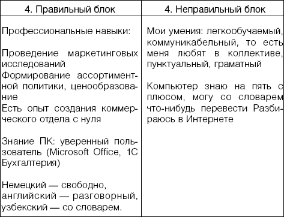

Идеальному работодателю предъявите идеальное резюме.

Сегодня, увы, устройство на работу очень часто напоминает лотерею или игру на бегах. Делая крупную ставку на понравившегося работодателя (а ставка очень велика: как минимум, несколько месяцев жизни и испорченное быстрым увольнением резюме), порой мы оказываемся у разбитого корыта. Как этого избежать? Помните, что на собеседовании не только работодатель оценивает вас, но и вы оцениваете работодателя. Нормальный работодатель никогда не испугается ваших вопросов об условиях работы, оплаты, должностных обязанностях. Он лишь увидит, что перед ним серьезный работник. А вот недобросовестному работодателю, желающему вас использовать и выбросить, или мошеннику, который собирается вас просто «кинуть», подобные вопросы, естественно, не понравятся.
Как распознать в работодателе мошенника?С одной стороны, рынок труда в России весьма молод, и соискатели еще не научились толково и с достоинством разговаривать с работодателем. А с другой стороны, этот рынок просуществовал уже вполне достаточно, чтобы на нем появились сотни способов обмана и целые индустрии мошенничества.
Существует множество разнообразных хитрых способов абсолютно законного отъема денег у ищущего работу. Здесь можно вспомнить и представителей сетевого маркетинга, которые обещают «от 2000$ в месяц и неполный рабочий день», но только вот сначала вы должны выкупить у них товар для последующей продажи. Спору нет, возможно, что некоторым и удается зарабатывать в сетевом маркетинге подобные деньги, но это все же исключение, а не правило – такие люди изначально обладают способностями к торговле, хотят и умеют заниматься продажами. Умелые сетевики преподносят свою работу как подходящую для каждого. Самое удивительное, что граждане покупаются на это, и, простите за каламбур, покупают первоначальный набор, который потом пылится у них дома, а затем выбрасывается или дарится. Представьте, что вы пришли в некую фирму, где вам сказали, что им требуется программист, и ничего, дескать, в этом сложного нет. Научитесь быстренько составлять программы и будете продавать их. Дело хорошее, посмотрите хотя бы на Билла Гейтса! Только сначала купите у нас компьютер. И ничего, что он дороже в разы, чем в любом магазине, это очень хороший, даже уникальный в своем роде компьютер! Не думаю, что на такое предложение кто-то согласится. Покрутят пальцем у виска и уйдут... Все понимают, что для составления программ нужен если не талант, то весьма специфические подготовка и умение. Но почему никто не понимает, что все то же самое необходимо и в торговле?
Еще один подобный бизнес, также построенный на принципах сетевого маркетинга, то есть «от двери к двери» – финансовые пирамиды. «Строители пирамид» обычно выдают себя за бизнесменов или финансовых гениев, и существует целая технология по втягиванию в этот круг неофитов. Все сводится к одному: сначала вы должны сдать весьма крупную сумму, потом найти нескольких человек, также готовых вложиться, и, когда они в свою очередь найдут еще вкладчиков, ваш вклад начнет потихонечку окупаться. Даже не приносить прибыль, а просто возвращаться. Понятно, что найти такое количество людей, тем более в наше время, когда подобные аферы хорошо известны, весьма сложно. Прежде чем ваш вклад начнет приносить вам прибыль или хотя бы просто вернется, организаторы пирамиды сбегут со всеми деньгам или будут задержаны милицией.
Так что запомните первый принцип: если кто-то хочет получить денег за ваше трудоустройство – никакого трудоустройства не будет. Деньги за трудоустройство можно платить только с первой прибыли или с первой зарплаты. Если же деньги начинают требовать сразу, значит, гипотетический работодатель понимает, что никакой первой зарплаты у вас не будет.
Так же стоит относиться и к требованию «залога» за какие-то рабочие материалы. Материалы либо дешевы, и тогда их не страшно доверить человеку, просто предъявившему паспорт, либо дороги, но тут их кому попало в руки не дадут.
Казалось бы, все просто, но схема с залогами успешно действует еще с начала 90-х. Самой известной стала история, произошедшая в Воронеже. Всем желающим за вполне приличные деньги предлагали сортировать по цветам разноцветные пластиковые шарики. Платили за это хорошо, но, так как шарики были весьма «ценные», желающие работать на их сортировке вносили залог. Мошенники не торопились и стабильно выплачивали деньги своим первым работникам. Когда весть о прекрасной работе облетела весь город и у офиса ежедневно стали выстраиваться очереди из желающих сортировать шарики, мошенники исчезли вместе с залогами, которые уже в тысячи раз превосходили суммы, выплаченные первым работникам.
Сейчас подобные мошенничества обставляются гораздо проще. Например, объявления, предлагающие заработать набирая тексты. Это, пожалуй, самый распространенный способ мошенничества. Потенциального работника должно насторожить хотя бы то, что сумма, которую обещают за один напечатанный лист, обычно превосходит в 2 – 3 раза обыкновенные расценки. Чтобы убедиться в «порядочности» работника, с него требуют символическую сумму: 50 – 100 рублей. Расчет прост: потеряв такие деньги, никто не будет мотать себе нервы в судах и милиции, проще махнуть рукой. Судя по количеству объявлений о «наборе текста», расчет мошенников верен.
Еще один способ нажиться на безработных: заставить их оплатить какую-нибудь услугу. Подобных схем множество. Например, обещая трудоустройство за рубежом, «работодатель» требует от безработного оформить загранпаспорт через определенную турфирму, где работают его знакомые и все будет «без проволочек». Или пройти медицинское обследование, так как работа «сложная, и мы не можем рисковать». На этом «трудоустройство» и заканчивается, а деньги, заплаченные несостоявшимся работником, делятся между «работодателем» и фирмой, оказавшей платную услугу.
Способов мошенничества такое количество, что их не перечислить, и советовать тут можно только одно: будьте бдительны. И помните: работодатель должен вам платить деньги, а не вы ему.
В последнее время также широко распространены «агентства по найму». Среди множества агентств, работающих честно, попадаются и жулики. Они или берут деньги за «список работодателей», куда попросту вбиты телефоны реальных фирм из старых объявлений, или устраивают потенциальному работнику платное собеседование в крутой компании. Компания в итоге отвечает отказом, а деньги делятся между агентством и менеджером по найму. Тем самым, который проводил собеседование.
Есть фирмы, которые дают вполне реальные задания по набору или переводу текстов, по обработке фото и пр. Вы делаете небольшой пробный заказ, но ввиду «некачественного выполнения» получаете отказ. А фирма прекрасно обходится без наборщиков или переводчиков: всю работу исполняют претенденты на несуществующие рабочие места. В этом случае разоблачить обман довольно просто: достаточно просмотреть старые газеты или доски объявлений в Интернете. Переводчики и наборщики в таких фирмах требуются из месяца в месяц и из года в год.
Не забывайте также о том, что в Интернете и в различных агентствах по найму существуют так называемые «черные списки работодателей», где перечислено большинство фирм, либо занимающихся мошенничеством, либо известных плохим отношением к работникам.
Бывают и случаи подстав: когда, например, выпускницу экономфака берут на работу бухгалтером, чтобы списать на нее все огрехи. Или нанимают кладовщиком человека без соответствующего опыта, надеясь за его счет закрыть недостачу.
А бывают и более забавные, если так можно выразиться, случаи. Женщина подала в газету объявление о том, что ищет работу. Через несколько дней ей позвонили и сказали, что требуется менеджер. Она пришла в офис, который показался ей симпатичным, прошла собеседование. Начальник прошел с ней в другой конец улицы, показал подвал, в котором находится их склад. На следующий день женщина вышла на работу. Приехал закупщик, расплатился. Женщина повела его на склад, где никого не оказалось. Женщина позвонила в офис, ей сказали, что кладовщик сейчас подойдет, просто надо подождать. Хотя закупщик нервничал и порывался вернуться в офис, женщина уговаривала его ждать кладовщика (ведь она первый день на работе, надо показать себя перед начальством в лучшем свете). В итоге кладовщика они так и не дождались, а когда вернулись в офис, то увидели, что ни компьютеров, ни столов, ни сотрудников там уже нет. Понятно, что не было и никакого склада: просто дверь в обыкновенный подвал. В милиции женщина с большим трудом смогла доказать, что работала в этой «фирме» первый день.
От таких случаев, понятно, не убережет никакой черный список, помочь могут лишь ваша внимательность и рассудительность.
Как распознать перспективного работодателя?Вы сумели подобрать себе подходящую профессию, счастливо избежали мошенников; возникает вопрос, какой работодатель вам больше подойдет. У любого человека есть сиюминутные потребности и долгосрочные цели. К сожалению, найти работу, в которой счастливо совмещались бы эти два пункта, весьма не просто. Даже невозможно, не стоит на это и рассчитывать. Если это произойдет, то случившееся стоит считать чудом и возблагодарить в молитвах Того, в Кого вы верите. Пока же вам следует решить, что для вас важнее: заштопать дырки в прохудившемся бюджете или возвести прочный фундамент будущего благополучия.
В одном месте вам обещают хорошую зарплату, но вы понимаете, что в этой компании все достойные места прочно заняты, и вряд ли в ближайшие годы вы сумеете продвинуться вверх по карьерной лестнице. В другой же зарплата гораздо ниже, но фирма растет, развивается, и, скорее всего, если вы себя хорошо покажете, через несколько лет у вас будет высокая должность с завидным окладом. Что тут выбрать? Мы, конечно, рекомендуем вторую фирму, но окончательное решение можете принять только вы, исходя как из своего материального положения, так и из личных амбиций.
Можно лишь сказать, что минусом теплой, но неперспективной должности для всякого амбициозного человека является то, что сидение на одном месте быстро надоедает, и через несколько лет вы, так и не получив повышения, начнете думать об увольнении. Тогда, возможно, вам придется заново проходить все круги поиска работы.
Конечно, главное – не ошибиться и верно оценить компанию, в которую вы пришли на собеседование или просто послали резюме. Прежде всего убедитесь, что компания работает стабильно: обратите внимание на возраст компании, численность сотрудников. Проанализируйте, какие конкуренты у этой компании на рынке: сильнее они или слабее. Неплохо узнать (уже на собеседовании) уровень и качество материальной и нематериальной компенсации в компании. Белая ли зарплата, как дается отпуск и т. п. Помимо отношения к работнику (которое, безусловно, важно для вас), подобные нюансы выдают и то, как владельцы ощущают положение своей компании на рынке, планируют ли они долговременное развитие или готовы обнулить все свои счета и сбежать на Канары (ну или просто сменить сферу деятельности). Невредно также зайти в какой-нибудь интернет-поисковик и посмотреть, что пишут об этой компании в Сети. Не забудьте задать поиск не по всему Интернету, а по блогам – частным дневникам. Вполне возможно, что вы найдете в них инсайдерскую информацию, переоценить значение которой невозможно – в личном разговоре никто из работников подобных секретов вам не выдаст. Впрочем, можно попытаться выведать тайны и другим способом: мир, как известно, тесен, и возможно, что племянник сослуживца вашего брата работает как раз в этой фирме.
Многое о стабильности компании говорит наличие хорошо оборудованных рабочих мест. Другое дело, что в фирме, которая только встает на ноги, уюта можно и не найти. Ясно, что в таком случае нельзя вести разговор про солидный возраст компании или большое количество сотрудников. Понять, ждет ли славное будущее интересующую вас компанию, можно исходя из нескольких факторов.
– Важны насыщенность сегмента рынка, на котором работает компания, и востребованность предоставляемой ею услуги. Не бойтесь, такой простой анализ по плечу даже дилетанту. Предположим, что фирма, куда вы думаете устроиться, продает посуду. Возьмите телефонный справочник и обзвоните фирмы, которые торгуют посудой в этом же ценовом диапазоне. Выясните, выше или ниже цены конкурентов. Много ли конкурирующих компаний? Насколько географически выгодно расположены их офисы? Не стоит считать, что ваш будущий работодатель знает, что делает, вложив деньги в определенную отрасль. Как показывает жизнь, этот постулат далеко не всегда оказывается верным. Далее. Если фирма занимается продажей, например, колбасы, то понятно, что этот рынок весьма объемен, и насытить его сложно. Большое количество конкурентов не сможет стать тут значимой помехой. А вот если фирма продает, например, бильярдные столы или аквариумы, спрос на которые весьма узок, избыток подобных контор может стать большой проблемой.
– Оцените офис фирмы. Даже на перенасыщенном сегменте рынка есть шанс на удачу, если в офис вложены хорошие деньги и правильно выбрано его расположение. Хорошо оснащенный офис говорит о том, что люди «вложились» серьезно, деньги у них есть, и, возможно, они просто забьют конкурентов за счет ассортимента и массированной рекламы.
– Реклама. Пролистайте рекламные газеты, посмотрите, насколько заметна в них интересующая вас фирма. Если фирма только что пришла на рынок, то она должна заявить о себе, и, чем агрессивнее, тем лучше. Если владелец экономит на рекламе – задумайтесь.
– Микроклимат. Бизнес – это война, и, чтобы отвоевать себе теплое место на солнышке рынка, команда, собирающаяся это сделать, должна быть сплоченной и дружной. Потом, с увеличением количества персонала и развитием фирмы, эта атмосфера, понятно, исчезнет. Но сначала она необходима. Присмотритесь к отношениям между сотрудниками, они смогут многое сказать вам о будущем успехе или неуспехе предприятия. Кстати, этот пункт весьма немаловажен: согласно статистике, очень многие согласны получать зарплату в среднем на 30% меньше взамен на хороший, благожелательный коллектив и комфортные условия труда.
– «Белая» зарплата. В наше время требовать стопроцентно белую зарплату, особенно в небольшой фирме, только выходящей на рынок, несколько наивно. Но, тем не менее, стоит задуматься, какая часть зарплаты вам будет выплачиваться в «белую» и какие наличествуют социальные гарантии и бонусы. Хорошая медицинская страховка говорит о том, что руководство относится к своим работникам бережно, и, найдя профессионалов, не хочет их терять. Если же работников не ценят, то и будущее эту фирму интересует не особо: «сегодня бабки срубим, а завтра хоть трава не расти».
Перечисленные пункты помогут разобраться, нацелена ли на развитие интересующая вас фирма, можно ли связывать с ней свое будущее. Но все-таки окончательное решение мы советуем принимать хорошенько посоветовавшись со своей интуицией.
При устройстве в любую компанию нельзя забывать и о таких важных мелочах, как, например, транспортная доступность вашей будущей работы или наличие поблизости дешевых кафе. Полтора часа в один конец в неудобном транспорте и подведенный весь день желудок могут перечеркнуть любые плюсы фирмы.
Мифы безработныхОбычно мы начинаем знакомиться с компанией после того, как послали туда резюме и получили приглашение на собеседование. Идеально, безусловно, навести краткую справку и о компании, и о ее перспективах на рынке еще до того, как вы посылаете резюме. Тем самым вы избавите себя от пустой траты времени, если получите приглашение на собеседование, и от лишнего расстройства, если не будете «удостоены» ответа.
Но прежде чем мы расскажем о том, как составить идеальное резюме, давайте разберем несколько мифов, которые осложняют нам жизнь. И зачастую не только портят наше резюме, но и мешают найти хорошую работу.
Миф первый. На хорошее место можно устроиться только по знакомству.
Этот стереотип пришел из лет проклятого застоя, когда во множестве организаций руководство волновал не профессионализм работника, а возможность оказать услугу нужному человеку. Ради справедливости стоит сказать, что личные способности, например, продавца, тогда и в самом деле значили не очень много: завезли бутылочное пиво – будет план; есть только кабачковая икра – тут уж как ни крутись, плана не сделаешь. Но сегодня, к счастью, многое изменилось. Хотя и нельзя сказать, что прием на хорошие должности на том основании, что у кого-то очень «полезный» папа, окончательно исчез. Увы, это случается, и гораздо чаще, чем можно было бы ожидать при капитализме. Но все-таки под приемом на работу «по знакомству» в наше время стоит скорее понимать не «блат», а рекомендацию. Когда появляется вакантное место, в первую очередь обзванивают коллег из других фирм и интересуются, не могли бы они кого-нибудь порекомендовать. Подобная рекомендация дает относительную гарантию, что кандидат на должность, во-первых, профессионал, а во-вторых, «нормальный», то есть может уживаться в коллективе. Поэтому, уходя с работы, никогда не порывайте связи с бывшими коллегами, вполне может быть, что они вам еще пригодятся. Но все-таки, анализируя рынок в целом, можно сказать, что «по знакомству» нанимают не более пятидесяти процентов работников. Хотя, безусловно, есть такие сферы, порою с очень маленькими зарплатами, куда без «блата» не устроишься. Там уже все расписано на годы вперед – когда чьего родственника брать. Конкретизировать не будем, вы, наверное, и так догадались. В других пятидесяти процентах весьма высокие и престижные должности занимают люди «с улицы», просто приславшие резюме и имеющие подходящий опыт. Так что никогда не теряйте надежды.
Миф второй. Без диплома никуда.
Диплом хорошего вуза, конечно, весьма важен при устройстве на работу. Просматривающий резюме кандидатов на солидную вакансию вряд ли обратит внимание на соискателя с «неоконченным средним». Другое дело, что опыт может все перевесить, и отсутствие у вас профильного образования работодателя волновать не будет. Что же делать, если вы видите, что должность прямо «ваша», а необходимого образования у вас нет? Если опыт позволяет вам занять эту должность, то просто «забудьте» про графу «образование». А если вы подозреваете, что служба безопасности фирмы не будет проверять ваши данные, а эту графу никак не обойти, то просто напишите какой-нибудь вуз, необязательно профильный. Если вы хорошо покажете себя на собеседовании, то, скорее всего, этот вопрос больше подниматься не будет. Но только тссс, мы вам этого не говорили. Помните, что подделка диплома – дело уголовно наказуемое, а вот за простое вранье вам ничего не будет. Худшее, что может произойти, – вас просто не примут на работу. Ну и нужна вам такая работа, где смотрят на бумажку, а не на реальный опыт, которым человек располагает?
Миф третий. Резюме должно соответствовать всем заявленным в вакансии параметрам.
Совсем необязательно. Если ваше резюме понравится работодателю, то он закроет глаза на множество «недостатков». Но, безусловно, не в том случае, когда требуется опыт бухгалтера, а вы до этого работали грузчиком. Так что знайте меру. Но, например, о том, что вы не вписываетесь в пределах нескольких лет по возрасту, можно смело забыть. В больших корпорациях, кстати, обычно собирают базу резюме, и, возможно, отказав вам в этот раз, пригласят в следующий, когда ваша специализация будет более востребована. В таком случае необязательно посылать резюме на какую-то конкретную вакансию, можно просто предложить свои услуги.
Миф четвертый. Без опыта ты никому не нужен.
В большинстве мест, и в самом деле, требуется опыт, и чем больше – тем лучше. Но многие работодатели, наоборот, избегают «опытных» и, по их мнению, «испорченных» работников, предпочитая обучать персонал самостоятельно. Такое происходит, например, в некоторых отделах продаж. Некоторые печатные издания избегают брать выпускников журфака. Есть еще ряд примеров, но они слишком специфичны, чтобы приводить их в книге. Помните: порою можно прорваться и без опыта, пусть и на не слишком заметную должность. Зато потом ваши шансы сделать карьеру в этой фирме будут гораздо выше.
Миф пятый. В Интернете работу не найти.
Если вы желаете устроиться грузчиком или продавцом – безусловно. А вот большинство вакансий на офисные должности выставляется как раз в Интернете. Многие также считают, что Сеть просто переполнена мошенниками, представителями различных видов маркетинга и пр. Они там и в самом деле есть, но вовсе не в таком количестве. Напороться на мошенника можно и по объявлению в газете. А избежать представителей сетевого маркетинга, на которых вы лишь зря потратите время, очень просто: никогда не отзывайтесь на объявления без четкого указания вакансии. Интернет занимает в нашей жизни все большее место, и его использование значительно увеличивает шансы на трудоустройство. На сайтах многих компаний существуют разделы, где можно оставить свое резюме, чтобы они имели вас в виду. А также там всегда есть раздел «вакансии», где объявления появляются гораздо раньше, чем в печатных изданиях или рекрутинговых фирмах. Помните, что, отзываясь непосредственно на вакансию, вы уменьшаете свои шансы, так как у вас сразу же появляется множество конкурентов, которые в это же время высылают работодателю свои резюме. А вот если ваше уже лежит у него в загашнике, то шанс, что позовут именно вас, увеличивается. Впрочем, это относится не только к поиску работы в сети. Свое резюме можно разослать и по почте. Так сказать, «про запас».
Миф шестой. Идеальное резюме.
Такого резюме не существует. Вернее, оно есть, но для каждой конкретной вакансии его надо составлять заново, учитывая требования работодателя. Работодателей зачастую интересуют совершенно разные вещи. Запомните – нельзя составить резюме один раз и успокоиться.
Заготовка под идеальное резюмеПервое, что вы должны проконтролировать, отсылая резюме, – его элементарную грамотность. Работодатель, безусловно, понимает, что любой человек может опечататься и ошибиться, но предпочитает тех, кто свои ошибки видит и умеет их исправлять. Маленький пустячок может испортить все положительное впечатление от грамотно составленного резюме.
Не забывайте предварять свое резюме письмом. Недавно еще необычное для нас «резюме» стало сегодня канцеляритом, бездушной бумажкой, которых какой-нибудь специалист по найму перелопачивает за день сотни. Так что письмо поможет обратить его внимание на ваше резюме. То, как он поступит с ним дальше – отправит в корзину или пустит в дело, – зависит уже от изложенного в резюме. Но письмо все-таки несколько увеличивает шанс, что к вашему резюме отнесутся немного внимательнее, чем к остальным. Только не забывайте, что письмо должно быть деловым: не жалуйтесь в нем, не расписывайте свои подвиги, лишь вкратце суммируйте ваш опыт, объясните, почему вы считаете, что сможете хорошо справиться с предлагаемой работой, и расскажите о причинах, по которым вы желаете работать именно в этой фирме. Помните, «потому что зарплату платят» – это не ответ. Придется напрячь фантазию. Но никто и не обещал, что будет легко. Если достижений у вас мало – замените их положительными свойствами характера, не умеете подать себя – попросите кого-нибудь помочь вам. Конечно, не стоит преувеличивать значение письма, но и преуменьшать его тоже не надо.
Постарайтесь, чтобы письмо и резюме были набраны разными шрифтами и не сливались между собой. Выделите важные, по вашему мнению, места, постарайтесь, чтобы ваша заявка на должность выглядела красиво. Но это не должно быть, безусловно, и «лоскутное одеяло». Элегантный деловой стиль – вот наш конек.
Теперь приступаем к составлению самого резюме. Помните, что, хотя письмо и дает вам чуть больше шансов, при первичном отборе никто не тратит на одно резюме больше 15 – 20 секунд. Ваша задача – в эти сверхсжатые сроки суметь обратить на себя внимание работодателя. Первое, что для этого необходимо, – правильный шаблон. Ваше резюме не должно быть больше одного листа. Никто не будет изучать «Войну и мир». Не то время и не то место. Про все нюансы своих подвигов и про личное Бородино вы расскажете уже на собеседовании. Пока же ваша задача – попасть на это собеседование.
Основной шрифт – Times New Roman, размер – 12 – 14 пунктов. Выделяйте важные моменты жирным, а не курсивом или, тем более, подчеркиванием. Пишите короткими абзацами. Никаких рамочек, экзотических символов и прочего.
Стандартное идеальное резюме должно состоять из нескольких блоков. Вот они:
1. Личные данные соискателя:
Фамилия, имя, отчество. Дата рождения.
Контактная информация (адрес, телефон, электронная почта).
Если вы из другого города, не стоит акцентировать места прописки и фактического проживания. Это вызывает у работодателя немотивированное подозрение. Если в силу каких-то причин вы считаете, что он должен об этом знать, лучше расскажите ему об этом на собеседовании.
Оставляйте сотовый телефон, по которому вас всегда можно найти. Если оставляете домашний, проинструктируйте близких, чтобы они, в случае вашего отсутствия, строгим голосом говорили: «Василия Ивановича (или как вы в резюме представились?) сейчас нет. Что ему предать?» – а не «Да Васек за пивом метнулся, звякните через полчасика. Поговорит с вами, если будет еще в сознании».
Возраст указывайте только в том случае, если считаете его преимуществом. Помните, что берут не из-за возраста, а из-за опыта.
2. Пожелания к будущей работе.
Если вы претендуете сразу на несколько должностей, пошлите на каждую отдельное резюме. Постарайтесь, чтобы должности, на которые вы претендуете, не противоречили друг другу. Название должности должно полностью совпадать с указанным в вакансии.
3. Опыт работы.
Не увлекайтесь, перечислите только то, что имеет непосредственное отношение к той должности, на которую вы претендуете.
Назовите пять мест работы в обратном хронологическом порядке, то есть начиная с последнего. Каждому месту должен быть отведен абзац, в котором необходимо указать период работы, название компании, сферу деятельности, вашу должность и ваши обязанности. Если есть какие-то заметные достижения, укажите их, только в двух словах, не растекаясь мыслью по древу.
4. Профессиональные навыки.
Вы, в принципе, в предыдущем блоке уже указали свои навыки, полученные на разных должностях. В четвертом блоке их необходимо подытожить, особо выделив те, которые требуются вашему предполагаемому работодателю.
Нахваливая себя, не употребляйте слов типа «стрессоустойчив», «коммуникабелен» и пр. Они уже давно не несут никакой смысловой нагрузки и воспринимаются работодателем как пустая болтовня.
В этом разделе также следует указать степень владения компьютером, иностранными языками и прочие ваши знания и умения, которые могут пригодиться в работе. Например, то, что вы водитель со стажем, может заинтересовать работодателя, если в вашей работе предусмотрены хотя бы редкие поездки. Но если вы устраиваетесь, например, вахтером, вряд ли стоит сообщать о наличии у вас автомобильных прав.

5. Образование.
Не упоминайте вашу школу, поверьте, она никого не интересует, хотя, быть может, у вас и остались о ней самые теплые воспоминания. Укажите образование, которое позволяет вам претендовать на указанную выше должность.
Назовите учебное заведение, годы учебы и полученную квалификацию.
Весьма желательно указать дополнительное образование (курсы, тренинги, повышение квалификации и т. п.), если оно связано с вакансией. Это можно сделать, даже если связь весьма относительная: покажите предполагаемому новому руководству, что вы любите учиться и желаете развиваться.
Если с высшим образованием у вас есть проблемы, то, как уже было сказано выше, этот блок можно опустить.
6. Дополнительные сведения.
Сложно сказать, нужна эта часть резюме или нет. Судя по тому, как ее обычно заполняют, – лучше бы ее и не было. Но, тем не менее, и из этого блока можно извлечь пользу.
Напишите здесь то, что вы не сумели втиснуть в прочие блоки. Снова предупреждаем: эта информация должна иметь непосредственное отношение к желаемой должности.
Предвидя, например, заграничные командировки, укажите, что у вас есть загранпаспорт. Можете также отметить, что готовы к командировкам и ненормированному рабочему дню.
Здесь же можно перечислить ваши личные качества или хобби. Но постарайтесь, чтобы они имели отношение к выбранной вами должности. То есть, если на досуге вы ведете в соседней школе кружок кройки и шитья, то вряд ли имеет смысл об этом сообщать, претендуя на должность коммерческого директора. А вот если вы устраиваетесь, например, в детскую библиотеку, такая информация вполне уместна.
Сообщать ли о семейном положении и количестве детей – решайте сами. В некоторых фирмах это будет плюсом, а в некоторых может вызвать отрицательную реакцию.
7. Рекомендации.
В последнее время рекрутеры все чаще требуют, чтобы в резюме была и эта графа. В ней указываются телефоны ваших бывших работодателей или начальников, которые могут вас порекомендовать. Обычно всегда можно найти фирму или несколько, с которыми вы расстались по-хоршему, и там с удовольствием выскажутся о вашем профессионализме. Если таких фирм нет, то в вашей жизни явно надо что-то менять. Существует и другая проблема: некоторая часть начальства почему-то отрицательно относится к людям, покинувшим их фирму, и хочет показать им, что «работы лучше, чем у меня, не найти». И, в меру своих скромных сил, делает для этого все возможное. Например, говорит гадости, когда звонят за рекомендациями. Можем посоветовать, увольняясь, взять характеристику. Написать вам плохую характеристику гораздо сложнее, чем солгать незнакомому человеку по телефону. И второй совет: попросите кого-нибудь из знакомых позвонить вашему бывшему начальству, и, представившись рекрутером, поинтересоваться вашим профессионализмом. Из такого разговора вы сможете сделать выводы, стоит ли указывать в своем резюме телефоны своего бывшего начальства.
В этом блоке необходимо указать должность и место работы лица, готового дать рекомендацию. Другие сведения здесь не нужны.
Ваше резюме составлено. Оно почти идеально, необходимо лишь немного корректировать его, в зависимости от тех требований, которые предъявляет к претенденту на должность та или иная фирма.
Учтите еще несколько нюансов. В описании своей нынешней должности используйте глаголы в настоящем времени: руковожу, составляю. Говоря о предыдущих местах работы, используйте глаголы в прошедшем времени: руководил, составлял.
Проследите, чтобы резюме было оформлено в едином стиле: основная масса текста – простым шрифтом, а даты, названия компаний и учебных заведений – жирным.
При этом постарайтесь придать своему резюме некоторую «живинку», чтобы просматривающий его увидел за текстом человека. Только не переусердствуйте: пахнущее духами резюме с разноцветными шрифтами, напечатанное на розовой бумаге, отправится в корзину. А перед этим над ним посмеются во всех отделах.
Не переставайте рассылать резюме до тех пор, пока ваша трудовая не ляжет на стол в отделе кадров вашей новой работы. Не стоит питать лишних надежд: если вы не получили отзыв на свое резюме в течение двух суток, можете забыть про эту должность. Исключения, безусловно, бывают, но ведь, как говорят, многие даже видели инопланетян. Кстати, если вы их тоже видели – не указывайте это в вашем резюме!